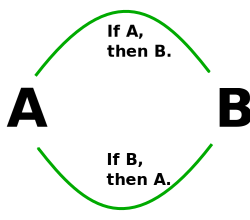

Quina de les seguents opcions defineix millor la falacia Ad Baculum?
Implica posar a prova una proposició que, després d'una sèrie de raonaments, acaba reafirmant-la i utilitzant el mateix raonament com a justificació de la seva validesa. Tot i semblar un argument sòlid, no demostra ni la veracitat ni la falsedat de la proposició, sinó que la presenta com el resultat lògic d'un raonament correcte, cosa que la converteix en una fal·làcia.
Es basa en provar una proposició, on després d'una seqüència de raonaments, es reafirma la mateixa proposició utilitzant el mateix raonament per justificar-la. Aquest tipus de raonament no determina si la proposició és veritable o falsa, sinó que la presenta com el resultat lògic d'un raonament correcte, cosa que la converteix en una fal·làcia.
Consisteix en posar a prova una proposició que, després de realizar un raonament circular, condueix a l'afirmació de la proposició i presenta al ronament com a justificació de la seva validesa. Aquest tipus de taonament no demostra ni la veracitat ni la falsedat de la proposició, però la presenta com el resultat lògic d'un gaonament correcte, i per això és fal·làcia.
Implica sotmetre una proposició a prova, la qual, després d'una sèrie de raonaments circulars, acaba reafirmant-la i utilitzant el mateix raonament com a justificació de la seva validesa. Això no demostra la veracitat ni la falsedat de la proposició, sinó que la presenta com el resultat lògic d'un raonament correcte, convertint-se així en una fal·làcia.
Molt Be!
Has seleccionat la respota correcte!!
Tancar